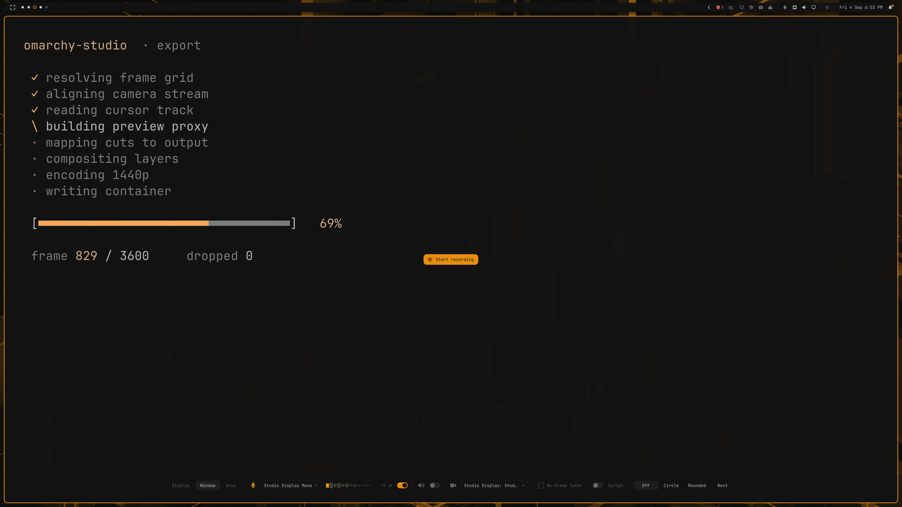
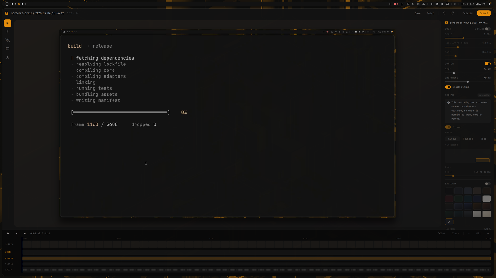

Record the pixels.
Decide everything else later.
A non-destructive screen recorder in the Screen Studio mould, built for Hyprland. The camera, the cursor, the clicks and the window's position are all captured as separate, editable data — so the zoom, the framing and the crop are decisions you make after the take, not before it.
One rule explains most of the design: recording captures pixels, editing captures intent, and export is the only place the two meet. Nothing you do in the editor touches what was recorded, and nothing about how you recorded limits what you can decide afterwards.
01How it works
The model, and what it buys you.
A recording is a directory, not a file
screenrecording-2026-09-05_13-23-43/
├── capture.json what the hardware did IMMUTABLE
├── edit.json what you decided MUTABLE
├── media/
│ ├── screen.mp4 the master, at capture resolution
│ ├── screen.mp4.ts first-frame timestamp sidecar
│ ├── cam.mp4 the camera, recorded separately
│ └── cam.tsv camera frame timestamps
├── events/
│ ├── input.jsonl clicks, with timestamps
│ ├── cursor.bin pointer positions, 120 Hz
│ └── chrome.json rectangles that are UI, not content
├── proxy/ fast draft copies, rebuilt on demand
└── assets/ images you addedcapture.json is written once and holds only facts: resolution, frame rate, the monitor and its scale, the clock anchor that ties events to frames. It is never edited, because it is the record of what actually happened. If it were mutable, every later question — where was the cursor at 4.2s? — would have two possible answers.
edit.json is everything you chose. It is small, it is JSON, and it is the only thing an edit writes. Delete it and you have the raw recording back, exactly as captured.
Four stages
1 · Setup — decide what to record
A bar appears at the bottom of the screen, and an overlay on each display shows its name, resolution and frame rate with a Start button in the middle. The button sits on the target itself, which doubles as proof you picked the right monitor.
Pressing Start begins a countdown — and capture initialisation runs during it rather than after, so the two waits overlap. Every setup surface is destroyed before the countdown ends, so no frame of the UI can reach the recording.

2 · Record — pixels and intent, in parallel
Three things run at once: the screen through one of three capture backends, the camera to its own file with its own timestamps, and an input daemon sampling the pointer at 120 Hz while logging every click.
That third one is why automatic zoom is possible at all. Clicks are recorded as data, not as an effect — so the zoom they imply can be tuned, deleted, or switched off long after the take is over.
3 · Edit — non-destructively
The editor plays a proxy: a fast, lower-resolution copy of the master, built in the background so scrubbing stays responsive on a 5K recording. Everything you see is your edit applied live over that proxy. Nothing is rendered until you export.
4 · Export — one ffmpeg process
The whole edit compiles to a single filtergraph. No intermediate file, no round trip, no generation loss. The graph is written to a file rather than passed as arguments, because a long project's graph exceeds the kernel's argument limit.
Why the stage order is what it is
The order is not arbitrary; each position was measured.
- Cut first. Everything downstream then runs over fewer frames — 2.20s against 2.83s on the same project. Cut-first with remapped layer timings produces bit-identical frames to cut-last with verbatim ones, so the reordering is provably free.
- Cursor before the zoom, so the zoom magnifies the pointer along with the pixels underneath it. Drawn after, the pointer would need the zoom's per-frame viewport inverted into its own position maths — and any disagreement between the two copies shows up as the pointer sliding across the thing it is pointing at.
- Zoom second, while the frame is still planar YUV. The same warp costs 8.4 ms/frame on
yuv420pand 14.9 ms/frame once the backdrop has converted the stream to RGBA. Identical pixels, nearly double the price. - Backdrop third, and it fixes the output length. The background is an infinite source and the real video reaches it through
shortest=1. The other way round, the background's timebase governs the output — a 6.9s clip once came out 208 seconds long. - Layers last. Their cost scales with how many exist, not how long each is visible (2.75s against 2.70s for a layer visible 1s of 20 versus throughout).
02Engines
What does the work, and why each choice was made.
Capture: three backends, not one
Wayland does not let an application record whatever it likes, and the three ways in have different powers. The differences leak into what the product can offer, so they are worth knowing.
| KMS | Portal | Toplevel | |
|---|---|---|---|
| Reads | DRM scanout, below the compositor | xdg-desktop-portal stream | one window's surface tree |
| Frame rate | 60 fps | 30 fps | display rate |
| Sub-rectangle | yes | no — whole monitor | n/a |
| Can hide a window | no | yes | n/a |
| Used for | monitor, area | anything needing a hidden self-view | true single-window |
KMS is the default and the fastest. It reads the scanout below the compositor, which is exactly why it cannot honour no_screen_share: the compositor's decision to hide a window has already been applied to a layer this path never sees.
Portal runs at half the rate but the compositor is in the loop, so windows can be excluded. This is the backend that makes a live camera self-view possible — the bubble is on screen for you and absent from the recording.
Toplevel (hyprland_toplevel_export_v1) renders one window's surface tree alone — the Linux equivalent of ScreenCaptureKit's window capture. This is what "just this window" means when it means it literally: anything stacked on top is not in the take, because those surfaces are never composited into the frame.
Zoom is derived, not authored
Zoom moves are computed from the click track at render time rather than stored as keyframes. Clicks land on the output timeline, clicks inside a cut are discarded, and nearby clicks cluster into one move — without clustering, a burst of clicks in one dialog produces one zoom per click, each easing out before the next eases in.
Deleting one move stores the source frames of its clicks, not the move's index or its time range — both of those shift the moment any other edit lands. The click track is part of the capture and never changes, so it is the one stable name.
enable=31.2 sRender: one graph, one process
Everything below the zoom is composited at the size the export will be, not at the master's. The background is a band-limited gradient, the shadow a Gaussian whose sigma is proportional to its radius, the corner mask analytic coverage — all resolution-independent by construction. Building them at four times the pixels and discarding three quarters buys nothing.
This is also better quality, not a trade: the backdrop scales the video down to make room for its own padding, so the old arrangement resampled the picture twice. Now the zoomed master reaches its final size in one lanczos step.
The encode runs on the CPU, which is the counter-intuitive part. VAAPI measured slower — 18.11s against 19.82s at 1080p, 49.43 against 52.80 at 4K — because every filter in the graph is CPU-only, so hwupload only adds a copy. VAAPI offloads the encode, which was never the bottleneck. (The native window recorder does use VAAPI, because there the encode is all there is.)
Audio
Every step is placed deliberately. The start-pop fade sits before the cut, so it belongs to the capture's start rather than the edited timeline's — cut the head away and the fade goes with it, instead of silencing the first 450 ms of whatever now begins the video. Declick sits before loudnorm, because a key clack is the loudest thing in a narration track and normalising first would set the gain from the noise and leave the voice quiet.
Removing keyboard clicks
RNNoise with a vendored model, followed by afftdn. Chosen by measurement on a real take, scored by the gap between how much each candidate attenuates the clacks and how much it attenuates speech — the gap is what matters, since loudnorm follows and makes absolute level irrelevant.
adeclick — the original choice0.4 dBafftdn alone6.0 dBarnndn alone6.2 dBarnndn + afftdn12.1 dBTone breaks the tie. Measured as high-band minus low-band energy, the source sits at −13.4 dB and this chain lands at −15.0 dB — 1.6 dB from the source, while taking 18 dB off the clacks. More aggressive alternatives scored better on the gap and left a dulled, underwater voice.
arnndn delays 9.94 ms and afftdn 25.00 ms. Without a trim, turning the option on pushed the entire audio track ~35 ms behind the picture — a lip-sync error nobody would attribute to a denoiser. The chain trims its own latency off the front.Redaction
Blur and pixelate are applied at export, on a shared preset ladder so switching method never silently changes how much is recoverable. The QML preview and the ffmpeg export compute strength from the same function — Qt's MultiEffect and ffmpeg's gblur are different kernels, so the preview value is the export sigma mapped back through a measured ratio. Calibrated to match, not chosen to look right.
Redactions are never partially transparent and never faded. A translucent blur box leaks the pixels it exists to hide.
03Using it
Three surfaces: the setup bar, the HUD, and the editor.
Before recording
bin/omarchy-capture-screenrecording # opens the setup bar; run again to stopWorth binding to a key. There is no PrintScreen on every keyboard, and the stock Omarchy capture bindings assume there is:
o.bind("SUPER + SHIFT + code:13", "Screenrecording (studio)",
"/path/to/omarchy-studio/bin/omarchy-capture-screenrecording")Two options are worth understanding before you press Start:
- Just this window captures only that window's own surfaces — anything stacked on top is not in the take. Needs the native window recorder built; without it you get the window's rectangle, and whatever is over it.
- Follow window records the whole display and carries your selection as a crop, so a window that moves mid-recording can be followed afterwards. It puts the whole screen on disk, which is a privacy consideration: everything beside the window is in the bundle where an export could reach it.
While recording — the HUD
A floating pill with elapsed time, a live microphone level, and three buttons: Pause, Discard and Stop.
It is kept out of the recording by the compositor, and it refuses to appear at all rather than be recorded — if there is nowhere to put it outside the capture and the compositor cannot hide it, it closes itself and tells you the keyboard shortcut instead.
The editor

The timeline
| Row | Shows |
|---|---|
| screen | the take, as uniform film cells |
| layers | one sub-row per layer, front-most first, each spanning its time range |
| zoom | the zoom moves — the row you actually work in, so its label is accented |
| clicks | every recorded click; the ones that produced a zoom read brighter |
| audio | the audio track |
Cuts are a fold, not a hole. A cut span collapses to a 16-pixel seam that spans every row at once — the x-axis itself folds, so one cut is one object rather than a gap per row. Click a seam to expand it and see what is inside.
Making a cut
Press C to drop a mark at the playhead, move to the other end, and press C again to commit. Backspace removes a cut — but only one you have expanded, so a stray press with nothing open cannot take time out of the movie.
Zoom
Zoom is automatic, derived from your clicks, with amount, hold, ease and merge gap in the panel. To remove a single unwanted move — the click on a menu you would rather not zoom at — select it on the zoom row and press Delete. It stays deleted through every later edit. When any are deleted, the panel grows a restore button, because a deleted move leaves no gap on the timeline to click.
Layers and the camera
Text, images, captions, shapes and redactions, each with its own inspector plus a shared when section for its time range. Draw tools live on the canvas — select, text, blur, pixelate; Esc disarms back to select.
Because the camera is its own stream, the bubble can be moved, resized, reshaped or mirrored at any time. S splits the camera segment at the playhead — deleting the right-hand half is how a head that is on for the whole take becomes one that goes away partway.
Export
Pick 1080p, 1440p, 4k or native. A preset is a ceiling, never a target: asking for 1440p from a 1080p capture gives you 1080p, because inventing pixels costs time and file size to make the picture no better. When the render finishes, your file manager opens at the result.
Keyboard shortcuts
| Key | Does |
|---|---|
| Space | play / pause |
| ← → | step one frame |
| C | mark a cut, then commit it |
| Backspace | remove the expanded cut |
| Delete | delete the selected layer, or the selected zoom |
| S | split the camera segment at the playhead |
| P | preview mode — hide every editing handle |
| L | show or hide the layer list |
| Esc | disarm the draw tool, clear a selection, or leave preview mode |
| Ctrl+S | save |
| Ctrl+Z | undo |
| Ctrl+Shift+Z | redo |
Every letter shortcut is suppressed while a text field has focus, so typing a layer's name cannot fire an edit.
Worth knowing
- Undo is a whole-project snapshot, not a per-operation inverse, and drags coalesce into one step — so one Ctrl+Z undoes one gesture, not sixty frames of a drag.
- Saving is atomic. A crash mid-save cannot leave an unparseable
edit.json. - A take survives being stopped by something else. If the recorder is killed from outside — the stock bar indicator, a
pkill, a crash — the bundle is finalised anyway, either by a watcher or the next time the dispatch runs.